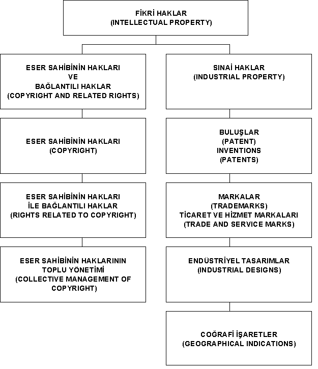

|
M.
Kaan DERÝCÝOÐLU
Ankara Patent Bürosu Ltd. Þti. Müdürü
kaan.dericioglu@ankarapatent.com
Ankara, 2003
Fikir
Ürünü
Fikir
ürünleri, bir biçim kazandýrýlarak ifade edilmiþ fikirler
anlamýndadýr.
Korunabilir
fikir ürünleri, biçimlenme þekillerine göre adlandýrýlýr:
- eserler;
- buluþlar;
- endüstriyel
tasarýmlar;
- entegre
devre topografyalarý;
- markalar;
- coðrafi
iþaretler;
- ticaret
unvanlarý, iþletme adlarý;
- internet
alan adlarý;
vb.
Fikir
Ürünü Sahibi
Eser,
buluþ, endüstriyel tasarým, marka, coðrafi iþaret, vb. fikir
ürünlerini oluþturan kiþi ya da kiþiler, "fikir ürünü sahibi"
olarak belirtilir.
Fikir
Ürünü Sahibinin Haklarý
Fikir
ürünü üretenler ile üretmeyenler arasýnda bir denge kurulmasý
ve üretenlerin özendirilmesi, fikir ürünü üretenleri korumak
yoluyla olmuþ ve fikir ürünleri sahiplerine fikir ürününün
kullanýmýna iliþkin tanýnacak özel hak ve yetkiler ile saðlanmýþtýr.
Fikir ürünleri korumasýnýn tarihsel geliþimi bu kanýyý doðrulamaktadýr.
Fikir
ürünü sahibinin fikir ürününe iliþkin manevi ve ekonomik
(malî) haklarý, fikir ürününün oluþmasý ile birlikte doðar.
Bu haklar; fikir ürününün topluma sunulmasý, hak sahibi olarak
belirtilme, fikir ürününde deðiþiklik yapýlmasýný önleme gibi
manevi haklar ile fikir ürününden ekonomik olarak yararlanma
amaçlý ekonomik (malî) haklardýr. Manevi haklar devir edilemez
iken, ekonomik (malî) haklar devir edilebilir, kiraya ya
da ödünç verilebilir.
Korunabilir
Fikir Ürünleri
Fikirler
deðil,fikir ürünleri korunmaktadýr. Bir biçim kazandýrýlmamýþ,
bir ürün þeklinde ifade edilmemiþ fikirler için herhangi bir
yasal koruma söz konusu deðildir.
Dünya
Ticaret Örgütü Kuruluþ Anlaþmasý eki Ticaretle Baðlantýlý
Fikri Haklar Anlaþmasý'nýn (TRIPS) 9/2 maddesindeki hükümden;
"Koruma; fikirleri, usulleri, iþletme yöntemlerini
ya da buna benzer matematiksel kavramlarý deðil, ÝFADELERÝ
kapsayacaktýr." yorumu yapýlabilir.
Ýfade
Edilmek
Ýfade Edilmek'ten amaçlanan, fikir ürününün biçim kazandýrýlarak
oluþturulmasýdýr.
Korumanýn
baþlamasý için fikir ürününün oluþmasý ön koþuldur. Henüz
yazýlmamýþ bir roman, tamamlanmamýþ bir buluþ, görsel anlatýmý
oluþmamýþ bir endüstriyel tasarým, tescil baþvurusu yapýlmamýþ
ya da henüz kullanýlmamýþ bir marka için koruma baþlamamýþtýr.
Örneðin,
"bir yaðlý boya resim yapacaðým ve bu resimde þunlar,
þunlar, ... yer alacak, þu renkleri kullanacaðým" ya da "sabah
güneþ doðarken Nemrut Daðý'ndaki heykellerin resmini yapacaðým",
"bir TV dizisi düþünüyorum. Bu dizide ........ romanýnýn kahramanlarý
ele alýnacak, kiþilikleri vurgulanarak romanda biçimlenen
yaþantýlarý canlandýrýlacak", "bir ekranda ayný anda iki ayrý
yayýný izleyebilecek televizyon yapacaðým" ifade edilmemiþ,
biçim kazandýrýlmamýþ fikirlerdir.
Ýfade
edilmemiþ fikirlerin korunmasý, ancak bu fikirlerin açýklanmamasý
durumunda söz konusu olabilir.
Fikir
Ürünü Korunmasýnýn Ön Koþulu
"Ýfade
Edilmek" ya da "Biçim Kazandýrmak" olarak açýklayabileceðimiz
fikir ürünü korunmasýnýn ön koþulu; sýnai haklarla
ilgili yasal düzenlemelerde,
- "uygulanabilmeyi
saðlayacak nitelikte açýklýk ve yeterlilik",
- "ayýrt
edici niteliðe sahip olmak",
- "belirgin
bir farklýlýk olmasý",
- "ayýrt
etmeyi saðlamasý koþuluyla"
ifadeleriyle
tanýmlanmaktadýr.
Ýfade
edilmek ön koþulu, buluþlarýn patent ya da faydalý model
belgesi verilerek korunmasýna iliþkin düzenlemede, "Tarifnamenin
Açýklýðý" baþlýklý Madde 46'da "Tarifname, buluþ konusunun
ilgili olduðu teknik alanda uzman olan bir kiþi tarafýndan
buluþun uygulanabilmesini saðlayacak nitelikte açýk ve yeterli
yazýlýr" olarak belirtilmiþtir. "buluþun uygulanabilmesini
saðlayacak nitelikte açýk ve yeterli" açýklanmayan
ya da ifade edilmeyen bir buluþ korunmayacaktýr.
554
sayýlý Endüstriyel Tasarýmlarýn Korunmasý Hakkýnda Kanun
Hükmünde Kararname'nin 5 inci maddesinde "yeni ve ayýrt
edici niteliðe sahip tasarýmlar belge verilerek korunur"
hükmü, koruma koþulu olarak "yenilik" ile birlikte
"ayýrt edici niteliði" de belirtmiþ ve 7 inci maddede,
"ayýrt edici niteliðe sahip olmak" koþulunu, "tasarýmýn
bilgilenmiþ kullanýcý üzerinde yarattýðý genel izlenim ile
herhangi bir tasarýmýn kullanýcýda yarattýðý genel izlenim
arasýnda belirgin bir farklýlýk olmasý" þeklinde
tanýmlamýþtýr. Bu durumda, "ayýrt edici nitelik" ve
"belirgin bir farklýlýk" koþullarýný saðlayacak þekilde
ifade edilmeyen endüstriyel tasarýmlar korunmayacaktýr.
Bazý fikir ürünlerinin birden çok yasal düzenlemeden ve farklý
ön koþullarla korunduðu deðerlendirilmelidir.
556
sayýlý Markalarýn Korunmasý Hakkýnda Kanun Hükmünde Kararname'nin
Markanýn Ýçereceði Ýþaretler baþlýklý 5 inci maddesindeki
"ayýrt etmeyi saðlamasý koþuluyla" hükmüne göre, önceki
markalardan ya da ticaret sýrasýnda kullanýlan bir baþka iþaretten
ayýrt edilebilir olacak þekilde ifade edilmeyen iþaretler
marka olarak korunmayacaktýr.
Fikir
Ürünleri Korumasýnýn Yorumu
Bilim,
edebiyat, sanat eserlerinde, eser sahibinin manevi ve ekonomik
(malî) haklarý, korumanýn yasal tanýmýný vermektedir.
Bu
taným, fikir ürünlerinin sahipleri için, fikir ürünlerinden;
-
diðer kiþilerin yararlanmasýna izin verme
ve
- izinsiz
yararlanýlmasýný önleme
olarak
yorumlanmaktadýr.
Örneðin,
roman, þiir, senaryo, beste, bilgisayar yazýlýmý, vb., hangi
biçimde olursa olsun bir eserin topluma sunulmasý, eser sahibinin
yazýlý iznini gerektirir. Eser sahibi izin vermediði sürece
eser topluma sunulamaz. Ýzinsiz olarak topluma sunulan bir
eserin sahibi, önleme hakkýný kullanmak için tek yol olan
yasal yollara baþvurabilir.
Fikir
Ürünü Sahipliði
"Ýnsan
> Akýl > Fikir" - "Ürün > Sahip > Hak" þeklinde
iki aþamalý olarak örneklenen temel yapýnýn birinci aþamasýndaki
"insan ve akýl", baþlangýcý belirlemektedir. Düþünce yetisine
sahip insanýn; belleði, deneyimi ve yaratýcýlýðý ile fikirleri
oluþturmasýna raðmen, yasal koruma düzeninde fikirlerin oluþturulmasý
koruma için yeterli kabul edilmemektedir. Yasal korumanýn
ölçütü olan, temel yapýnýn ikinci aþamasýndaki korunabilirlik,
biçimlenme sonucu üretilen ürün ile baþlamaktadýr. Yasal koruma,
fikir ürününü üreten kiþiye, üçüncü kiþilere izin verilmesi
ve izinsiz kullanýmýn önlenmesi þeklindeki fikir haklarýný
tanýmaktadýr.
Temel
Yapýnýn Fikir Ürününe Uygulanmasý
Ürün,
sahip ve hak kavramlarý fikir ürünlerine uygulandýðýnda, yapý;
"Fikir Ürünü", "Fikir Ürünü Sahibi", "Fikir Ürünü Sahibinin
Haklarý" olarak þekillenmektedir.
Fikir
ürünü sahipliðinin temel yapýsý, ilgili yasal düzenlemelerde
aþaðýdaki gibi yer almaktadýr:
5846
sayýlý Fikir ve Sanat Eserleri Kanunu'nda;
Eser (Madde 1),
Eser Sahibi (Madde 8),
Eser Sahibinin Haklarý (Madde 13).
551
sayýlý Patent Haklarýnýn Korunmasý Hakkýnda Kanun Hükmünde
Kararname'de;
Patent Verilerek Korunacak Buluþlar (Madde 5),
Buluþ Sahibi (Madde 8)
Patent Ýsteme Hakký (Madde 11),
Buluþu Yapanýn Belirtilmesi (Madde 15),
Tam ve Kýsmi Hak Talebinde Bedel (Madde 22-23).
554
sayýlý Endüstriyel Tasarýmlarýn Korunmasý Hakkýnda Kanun
Hükmünde Kararname'de;
Tasarým (Madde 3),
Tasarýmcý (Madde 13),
Hak Sahipliði ve Bedel (Madde 13 -14),
Tasarýmcý Olarak Belirtilme Hakký (Madde 18 ve 25),
556
sayýlý Markalarýn Korunmasý Hakkýnda Kanun Hükmünde Kararname'de;
Marka (Madde 2),
Marka sahibi ve Marka Tescilinden Doðan Haklar (Madde 9).
Gerçek
Hak Sahibi
Eserin,
buluþun, tasarýmýn gerçek sahibi, o fikir ürününü oluþturan
kiþidir. Bütün fikir ürünleri üzerindeki fikri hak ise, doðal
olarak fikir ürünlerini oluþturan kiþiye iliþkindir.
Manevi
Haklar
Yalnýz
gerçek fikir ürünü sahibi tarafýndan kullanýlabilen hak türü
"Manevi Hak" olarak adlandýrýlýr.
Fikir
ve Sanat Eserleri Kanunu'nda, manevi haklar aþaðýdaki gibi
sayýlmýþ ve tanýmlanmýþtýr:
- Topluma
Sunma Hakký
- Adýn
Belirtilmesi Hakký
- Eserde
Deðiþiklik Yapýlmasýný Yasaklama Hakký
- Eser
Sahibinin Zilyed ve Malike Karþý Haklarý.
(Eser sahibi ile eseri elinde bulunduran arasýndaki iliþki)
551
sayýlý Patent Haklarýnýn Korunmasý Hakkýnda Kanun Hükmünde
Kararname'nin 15 inci maddesindeki
"Buluþu
Yapanýn Belirtilmesi" ve
554
sayýlý Endüstriyel Tasarýmlarýn Korunmasý Hakkýnda Kanun
Hükmünde Kararname'nin 18 inci maddesindeki "Tasarýmcý
Olarak Belirtilme Hakký",
manevi haklarý belirtmektedir.
Manevi
Haklar Devir Edilemez
Fikir
ve Sanat Eserleri Kanunu Madde 14 ve 16'da düzenlenen manevi
haklarla ilgili hükümlerde "Bu haktan sözleþme ile vazgeçmek
hükümsüzdür" ifadesi, eserle ilgili manevi haklarýn
devir edilemeyeceðini belirlemiþtir.
Ekonomik
(Malî) Haklar
5846
sayýlý Fikir ve Sanat Eserleri Kanunu'nda ekonomik haklar;
Ýþlenme
Hakký
Çoðaltma Hakký
Yayma Hakký
Temsil Hakký
Ýþaret, ses, görüntü iletimine yarayan araçlarla kamuya iletim
hakký
olarak
belirtilmiþtir.
Ekonomik
Haklarýn Devir Edilebilirliði
Manevi
hak sahibi ile ekonomik hak sahibi ayný kiþi de olabilir.
Eser
sahibi, buluþu yapan, tasarýmcý, fikir ürününden ekonomik
olarak yararlanýlmasýný bir baþka gerçek ya da tüzel kiþiye
verebilir.
Fikir
ürünü olarak belirtilen eserlerde, manevi hak sahibi eser
sahibi, ekonomik hak sahibi ise yayýncý olarak örneklenmiþtir.
Örneðin, bir romaný yazan eser sahibi, yazdýðý romanýn
çoðaltma ve yayma haklarýný bir yayýncýya bir sözleþme ile
devir edebilir. Bu durumda eseri yayýnlayan yayýncýnýn, eser
üzerinde çoðaltma ve yayma haklarý oluþur. Bu olayda, ekonomik
haklardan iþlenme ve temsil haklarý saklýdýr, yayýncýya devir
edilmemiþtir. Yayýncý bu haklarý kullanamaz.
Haklarýn
Devir ya da Kiralanmasýnda Yazýlý Olmak Koþulu
Fikir
ve Sanat Eserleri Kanunu Madde 52
"Mali
haklara dair sözleþme ve tasarruflarýn yazýlý olmasý ve konularý
olan haklarýn ayrý ayrý gösterilmesi þarttýr",
551
sayýlý Patent Haklarýnýn Korunmasý Hakkýnda KHK Madde 86
"Patent
baþvurusu ve patent üzerinde saðlararasý iþlemler yazýlý þekle
tabidir",
554
sayýlý Endüstriyel Tasarýmlarýn Korunmasý Hakkýnda KHK Madde
39
"Baþvuru
ve tasarým hakkýnýn üzerinde saðlararasý iþlemler yazýlý
þekle tabidir."
hükümleri,
yazýlý olmak koþulunu belirtmektedir.
Uygulanacak
yazýlý iþlemlerin koþullarý her üç yasal düzenlemede belirtilmemiþtir.
Bir hakkýn kullanýmýna iliþkin tasarruf (devir, lisans ya
da ruhsat) iþlemlerinde sözleþmelerin Noterlikte düzenlenmesinde
yarar vardýr. Noter düzenlemesi, taraflarýn kimliklerinin
ve yetkilerinin doðrulanmasý açýsýndan yararlýdýr. Taraflarýn,
haklarýn kullanýmýna iliþkin yapacaklarý noter düzenlemesi
olmayan bir sözleþme taraflar arasýnda geçerlidir ve taraflarý
baðlar. Sözleþme sonrasýnda iki taraf arasýnda ortaya çýkacak,
kimlik ve yetki sorunu somut olaya göre genel hukuk kurallarý
içinde çözümlenecektir. Bazý yasal düzenlemeler, devir ve
lisans haklarýnýn üçüncü kiþilere karþý ileri sürülmesi için,
noter düzenlemesi ve sicile kayýt gibi koþullar belirlemiþtir.
Devir
ve Lisans Arasýndaki Fark
Bir
hakkýn devri, süreye ve koþullara baðýmlý olmadýðý halde,
lisans iþlemi, süreye ve koþullara baðýmlýdýr. Koþullar yerine
getirilmediði zaman, lisans iþlemi, sözleþmede belirtilen
þekilde, sona erer. Marka devir olayýnda ise, koþullar yerine
getirilmediði zaman sözleþmenin geçersizliði, her iki tarafýn
kabul edeceði yeni bir sözleþme ya da görevli mahkemenin vereceði
karar ile saðlanabilir.
Örneðin
bir markanýn devri için düzenlenen sözleþmenin Türk Patent
Enstitüsü'ne verilmesi ve ilgili harcýn ödenmesi ile devir
marka siciline iþlenir. Buluþlar ve endüstriyel tasarýmlarda
da durum benzerdir.
Devir
Bedeli
Devir
iþleminde devir için bir bedel söz konusu olduðu halde, devir
bedeli devir öncesinde ya da devir iþlemi sýrasýnda ödenmemiþ
ve devir sözleþmesi imzalanarak tamamlanmýþ ise, sözleþmenin
imzalanmýþ olmasý devir iþleminin gerçekleþtiði anlamýna gelir.
Söz konusu ödemenin yapýlmamasý ile ortaya çýkacak anlaþmazlýk
bedelin ödenmesine iliþkindir. Ödemenin yapýlmamasý, devir
sözleþmesinin geçersizliði sonucunu doðurmaz ve anlaþmazlýðýn
hukuk kurallarý içinde çözümlenmesi gerekir.
Markalarda
Manevi Hak Durumu
Ýyi
bir marka bulmanýn çok zor olduðu günümüzdeki rekabet ortamýnda,
markayý kullanan, markadan ekonomik olarak yararlanan, markanýn
toplum tarafýndan tanýnmasýný saðlayan, gerçek ya da tüzel
kiþiler gündemdedir. Bir eserin, bir buluþun, bir endüstriyel
tasarýmýn yaratýcýsý belirtilirken, fikir ürünü örnekleri
arasýnda yer alan markada, markayý öneren gerçek kiþilerden
genellikle söz edilmez.
Markalar,
harfleri, sayýlarý, sözcükleri, þekilleri, kiþi adlarýný,
üretilen eþyanýn biçimini ve ambalajýný içerebilir. (556 sayýlý
KHK Madde 5) Marka gerek özgün bir yazý biçimini ve gerekse
özgün bir þekli, birlikte ya da ayrý içerebilir. Markayý bir
baþka kiþi kullandýðý halde, bu yazý ve þekli çizen-tasarlayan
eser sahibinin haklarý, devam etmektedir. Markaya izinsiz
kullaným yoluyla tecavüz oluþtuðunda, eser sahibi, eseri üzerindeki
haklarýna tecavüzün önlenmesi için, markayý kullanan kiþilerden
baðýmsýz olarak, dava açabilir.
Fikri
Ürünlerinde Koruma Kriterleri
Eserlerin,
buluþlarýn, endüstriyel tasarýmlarýn, markalarýn ve diðer
fikir ürünlerinin tümü korunacak mýdýr? Bu sorunun yanýtý,
hiç þüphesiz, "hayýr" olacaktýr. Fikir ürünlerinin korunmasý
için kriterler belirlenmiþ ve bazýlarý tanýmlanmýþtýr. Örneðin,
bir eserin korunmasý için sahibinin özelliðini taþýmasý ve
yasada sayýlan eser türleri kapsamýnda olmasý gerekir. Bir
baþka ifade ile, sýnýrlý sayýda fikir ürünü için koruma tanýnmaktadýr.
Bir
buluþun korunmasýnda; "yenilik, sanayiye uygulanabilirlik
ve tekniðin bilinen durumunu aþmak" þeklinde üç kriter vardýr.
Bu üç kriterin öncesinde, bir soyut kavram olan buluþun olmasý
gerekir.
Fikri
Hak
Fikir
ürünlerinin yasal korunmasý "Fikri Haklar" terimi ile
ifade edilir. Dünya Fikri Haklar Örgütü (WIPO) fikri haklarý
iki ana baþlýk altýnda deðerlendirmektedir. (Bakýnýz Tablo)
Bilim,
Edebiyat ve Sanat Eserleri ile ilgili haklar, ESER SAHÝBÝNÝN
HAKLARI; Buluþlar, Endüstriyel Tasarýmlar, Markalar ve
Coðrafi Ýþaretler, vb., ile ilgili haklar SINAÝ HAKLAR
olarak yorumlanmaktadýr. Eserleri yorumlayan sanatçýlar,
ses-görüntü kaydý yapan yapýmcýlar ve radyo - televizyon
kuruluþlarýnýn eserler ile ilgili haklarý ise, ESER SAHIBININ
HAKLARI ÝLE BAÐLANTILI HAKLAR olarak adlandýrýlmaktadýr.
Eser
Sahibinin Haklarý ile Sýnai Haklar arasýndaki en belirgin
farklýlýk, sýnai haklarda genellikle belgelendirme söz konusu
iken, eserlerin doðal korumadan yararlanarak korunmasýdýr.
Yeni/Özgün[1] Kavramlarý
Fikir
ürünü sahibinin haklarý ile ilgili iki kavram, evrensel boyutu
belirten "yeni" ve "özgün" kavramlarýdýr.
"Yeni/özgün
bir fikir ürünü tasarladým" iddiasý ileri sürüldüðü zaman,
bu iddia konusu fikir ürününün, herhangi bir ülkede, pazarda
satýlan ya da fuarda sergilenen ya da herhangi bir ortamda
önceden yayýnlanan bir baþka kiþiye ait bir fikir ürünü ile
ayný olmamasý, býraktýðý genel izlenim olarak, bilinenlerden
ayýrt edilebilir olmasý gerekmektedir. Bu koþulun saðlanamamasý
durumunda, korunabilir bir fikir ürünü söz konusu olmayacaktýr.
Türkiye'de
ya da baþka bir ülkede var olan, bir baþkasýna ait fikir ürünü
artýk yeni ve özgün deðildir. Yurt dýþýnda var olan fikir
ürününü Türkiye'ye ilk kez getirmek, bir baþka ifade ile ona
sahiplenmek, söz konusu kiþilere fikri ürünü korumasý saðlayamaz.
Türk
Patent Enstitüsü tarafýndan yayýnlanan Resmi Endüstriyel Tasarýmlar
Bülteni incelendiðinde, yenilik ve özgünlük kavramýnýn Türkiye'de
yeterince bilinmemesi ya da benimsenmemesi nedenleri ile oluþan,
kendi tasarýmý olmayan ya da yeniliði olmayan tasarýmlar için
baþvuru yapmak yanýlgýsýnýn onlarca örneði görülebilir. Endüstriyel
tasarým tescili için baþvuran kiþi, baþvurusu sýrasýnda "yeni/özgün
bir fikir ürünü tasarladým" þeklinde, kendisini baðlayan ve
4128 sayýlý yasada bir suç olarak tanýmlanan, gerçeðe aykýrý
bir beyanda bulunmaktadýr.
Korunacak
Kiþiler ve Gasp Olayý
- Fikir
Ürünlerinin Korunmasý düzeni,
- yeni
bir buluþu yapan;
- yeni/özgün
bir tasarýmý tasarlayan;
- ayýrt
edici bir iþaret olan bir markayý ilk kez düþünen ve ürün
ya da hizmette kullanan;
- özgün
bir romaný, bir þiiri yazan; özgün bir besteyi yapan
- vb.
gerçek
kiþilerin fikir ürünlerini koruyan, evrensel nitelikli bir
düzendir. Bu evrensel nitelikli düzende, hak sahibi olmayan
kiþilerin haklara sahiplenmelerine karþý önlemler de oluþturulmuþtur.
Gerçek fikir ürünü sahibi olmadýðý halde, kendisini fikir
ürünü sahibi olarak ileri süren kiþiler "Hakký Gasp Eden"
olarak tanýmlanmaktadýr.
Doðal
Koruma / Belgeli Koruma / Çoklu Yasal Koruma
Koruma,
fikrin ifade biçimine göre, deðiþik yasal düzenlemelerle saðlanmaktadýr.
Bazý fikir ürünleri bir yasadan ve bazýlarý birden çok yasadan
yararlanarak, belgeli ya da doðal olarak korunmaktadýr.
Eserleryalnýz
Fikir ve Sanat Eserleri Kanununa göre doðal olarak;
Yeni
buluþlar, yalnýz Patent Haklarýnýn Korunmasý Hakkýnda
Kanun Hükmünde Kararnameye göre, patent ya da faydalý model
belgeleri ile belgeli olarak korunmaktadýr.
Endüstriyel
tasarýmlar (ürünün iki ya da üç boyutlu görünüþleri) Fikir
ve Sanat Eserleri Kanunu, Endüstriyel Tasarýmlarýn Korunmasý
Hakkýnda Kanun Hükmünde Kararname, Türk Ticaret Kanunu Haksýz
Rekabet Hükümleri, Markalarýn Korunmasý Hakkýnda Kanun Hükmünde
Kararnameye göre, doðal ve belgeli olarak, çoklu yasal
korumadan yararlanmaktadýr.
Markalar,
Türk Ticaret Kanunu Haksýz Rekabet Hükümleri ile Markalarýn
Korunmasý Hakkýnda Kanun Hükmünde Kararnameye göre, doðal
ve belgeli olarak, çoklu yasal korumadan yararlanmaktadýr.
Eserler,
buluþlar bir yasal düzenlemeden, tasarýmlar ve markalar birden
çok yasal düzenlemeden korunmakta, buluþlar ise doðal korumadan
yararlanamamaktadýr.
Fikir
Ürünlerinde Koruma Süreleri
Fikir
ürünlerinin koruma süreleri, ilgili yasal düzenlemelerle belirlenmiþtir.
Eserler,
eser sahibinin yaþadýðý süre ve eser sahibinin ölümünden
sonra 70 Yýl devam eder. Fikir ve Sanat Eserleri Kanunu'nda
eser sahibinin haklarý ile baðlantýlý hak sahipleri için koruma
süreleri 70 Yýl olarak belirtilmiþtir.
Koruma
Koþullarý
Eserlerdeki
doðal koruma olayý, herhangi bir koþula baðlý deðildir.
Buluþlarýn
korunmasýnda her yýl ödenmesi gereken bir ücret söz konusudur.
Bu ücretin belirli bir süre içinde ödenmemesi buluþ üzerindeki
patentle saðlanan korumanýn sona ermesine yol açar.
Endüstriyel
tasarým tescillerinde beþ yýllýk sürelerde tasarým tescilinin
yenilenmesi gerekir. Yenilenmemede ya da yirmi beþ yýlýn bitiminde
tescilli koruma sona erer.
Ticaret
ve Hizmet markalarýnda, markanýn her on yýlda bir ve süre
bitiminden önceki ya da sonraki altý aylýk sürelerde yenilenmesi
gerekir. Markalarda yenilemeye baðýmlý olarak sürekli koruma
söz konusudur. Marka tescili sahibi markayý beþ yýl kullanmaz
ise, tescilli marka mahkeme kararý ile hükümsüz sayýlabilir.
Tescilli
Korumanýn Bitmesinde Doðal Koruma Olayý
Endüstriyel
tasarýmlar ve markalarýn birden çok yasal düzenlemeden yararlanarak
korunmasý nedeniyle, yenileme iþlemlerinin yapýlmamasý yalnýz
tescilli korumanýn sona ermesi anlamýndadýr. Koruma olayý,
tasarýmlarda fikir ve sanat eseri olarak ilgili hükümlerden
ve markalarda, markanýn kullanýmý devam ediyorsa, haksýz rekabet
hükümlerinden yararlanarak devam eder.
Yenilenmeyen
ya da yirmi beþ yýlýk koruma süresi biten bir endüstriyel
tasarým, eser korumasýna iliþkin süreler bitmeden, üçüncü
bir kiþi tarafýndan izinsiz kullanýlamaz.
5846
sayýlý Fikir ve Sanat Eserleri Kanunu bu konuya bir açýklýk
getirmiþ ve "Krokiler, resimler, maketler, tasarýmlar ve benzeri
eserlerin endüstriyel model ve resim olarak kullanýlmasý,
düþünce ve sanat eserleri olmak sýfatlarýný etkilemez" hükmü
yasanýn 4 üncü maddesinde yer almýþtýr.
Bu
maddede belirtilen "endüstriyel model ve resim", "endüstriyel
tasarým" terimini karþýlamaktadýr. "model" üç boyutlu ve "resim"
iki boyutlu tasarýmlarý ifade etmektedir. Sýnai Haklarýn Korunmasý
için Paris Sözleþmesi'nde (1883), endüstriyel tasarýmlar yerine
"sýnai resim ve modeller" terimi kullanýlmýþtýr.
Yanlýþ
Kullanýlan Terimler
Telif
Hakký
Hakký
Telif Kanunu (1910), 1952 yýlýnda Fikir ve Sanat Eserleri
Kanunu ile deðiþtirilirken bu terime yer verilmemiþtir. Yasada
yer alan "Eser, Eser Sahibi ve Eser Sahibinin Haklarý" sýralamasý
deðerlendirildiðinde doðru terim "Eser Sahibinin Haklarý"
olmalýdýr.
Fikri
Hak - Fikri Haklar
Fikri
Hak terimi yabancý dildeki "Intellectual Property"
teriminin karþýlýðýdýr. Bu terim, "Eser Sahibinin Haklarý"
ile "Sýnai Haklarý" birlikte kapsar.
Fikir
ve Sanat Eserleri Kanunu ile Edebiyat ve Sanat Eserlerinin
Korunmasýna Ýliþkin Bern Sözleþmesi kapsamýnda tanýmlanan
eserlerin korunmasý, fikri haklar deðil, fikri haklar kapsamýndaki
eser sahibinin haklarý'dýr. Bazý yazarlar bu terim
yerine "eser üzerindeki hak", "eserler üzerindeki haklar"
terimlerini kullanmaya baþlamýþlardýr..
Fikri
ve Sýnai Haklar
Intellectual
Property karþýlýðý fikri haklar olduðu için, bu þekliyle kullaným,
fikri haklar kapsamýnda olan sýnai haklarýn, kapsam dýþýnda
gibi algýlanmasýna yol açmaktadýr. Fikir ürünleri olan ve
sýnai haklar kapsamýnda deðerlendirilen yeni buluþlar ve tasarýmlar,
fikri hak konusudur. Fikri ve Sýnai Haklar Hukuk Mahkemesi,
Fikri ve Sýnai Haklar Araþtýrma ve Uygulama Merkezi yanlýþ
kullaným örnekleridir.
Fikri
Mülkiyet
"Maddi
Olmayan Mallar" üzerinde var olan þey, mülkiyet deðil bir
hak'týr. Mülkiyet "Maddi Mallar" kapsamýndaki varlýklar için
kullanýlýr. Bir baþka ifade ile, fikir ürünleri "soyut" ve
fikir ürünlerinin biçimlendiði eþyalar "somut" varlýklardýr.
Fikri Mülkiyet terimi yerine Fikri Haklar terimi, doðru
terim olarak kullanýlmalýdýr.
Fikri
Mülkiyet Hakký
Fikri
Mülkiyet terimi gibi, Fikri Mülkiyet Hakký da yanlýþ kullanýlan
bir terimdir.
Patent
Patent,
yeni buluþlara verilen belgenin adýdýr. Marka, Endüstriyel
Tasarým, Coðrafi Ýþaret, Entegre Devre Topografyalarý, vb.
öteki fikir ürünlerini korumak için verilen belgeler patent
deðildir.
Doðal
korumadan yararlanan eserler, bir eser türü kabul edilen bilgisayar
yazýlýmý için patent verilmesi söz konusu deðildir.
Marka,
Endüstriyel Tasarým, Coðrafi Ýþaret, Entegre Devre Topografyalarý
TESCÝL EDÝLÝR ve bunlara verilen belge TESCÝL BELGESÝ'dir.
MARKA TESCÝL BELGESÝ, ENDÜSTRÝYEL TASARIM TESCÝL BELGESÝ,
COÐRAFÝ ÝÞARET TESCÝL BELGESÝ, doðru terimlerdir. Patent bir
belge türü olduðu için, yeni buluþlara verilen bu belge yerine
tescil belgesi terimi kullanýlmamaktadýr.
Dünya
Fikri Haklar Örgütü'nün Fikri Haklar Ayýrýmý

Kaynak
: World Intellectual Property Organization (http://www.wipo.int)
Türkçesi : M. Kaan DERÝCÝOÐLU, 2001
|